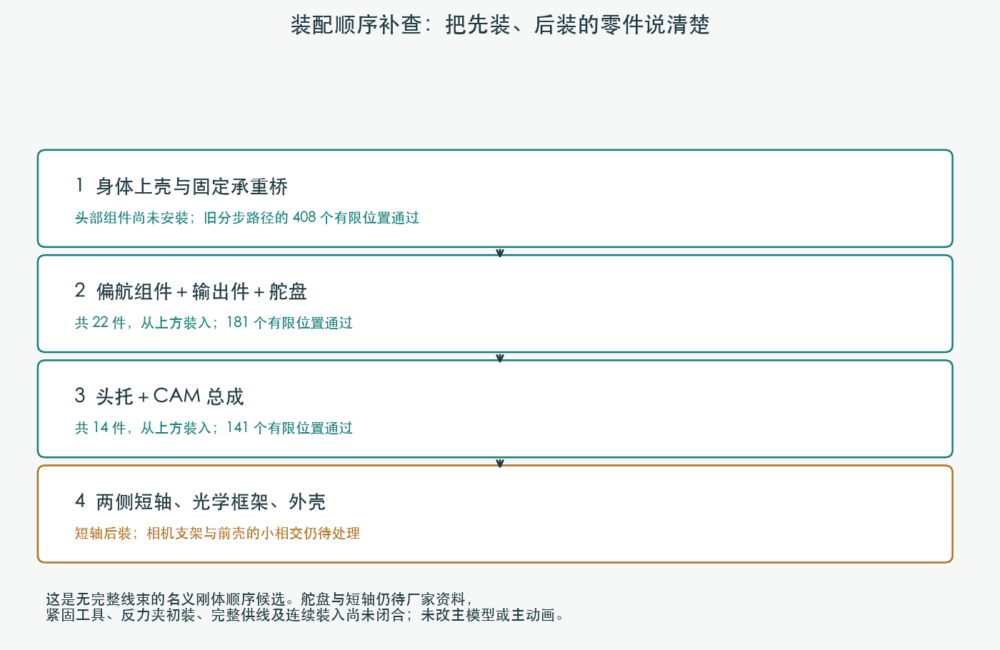
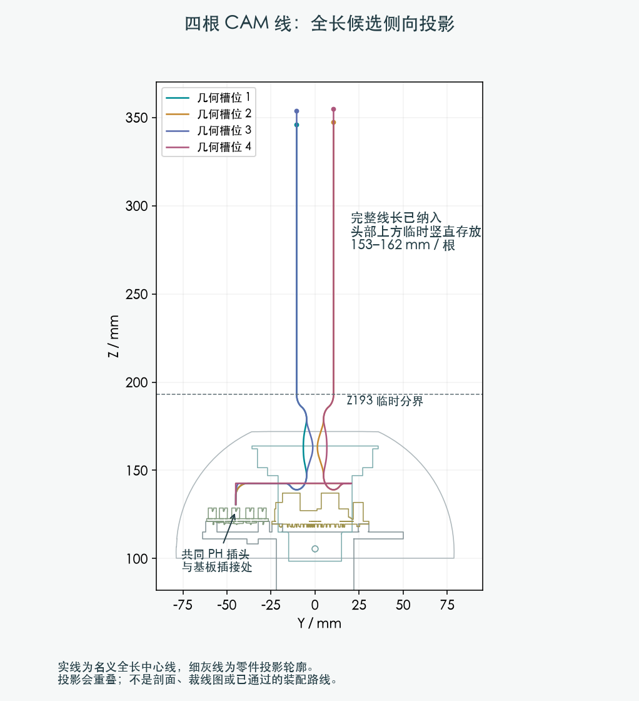
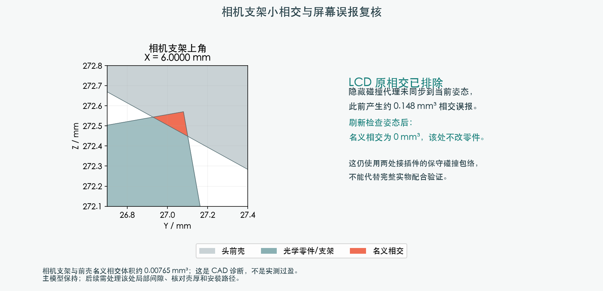

把舵盘提前随偏航组件装入、两侧短轴后装，名义刚体顺序可以继续。四根 CAM 线的全长与共同 PH 插头已建入候选，几个身体阶段仍有间隙或相交问题。供应商按图制作已确定；路线和裁线图仍由项目完成。

209 个机器人源实体全部归组，后装件有逐项清单。前四段身体/承重桥动作共检查 408 个有限位置；22 件偏航总成检查 181 个位置；14 件头托总成检查 141 个位置。只是所查刚体动作通过，尚不包含完整线束、握持及全部工具动作。主动画暂未改，舵盘/短轴仍待厂家接口资料。

| 几何槽位 | 名义路线总长 / mm | 上方直线余量 / mm |
|---|---|---|
| H06-G1 | 287.29 | 153.15 |
| H06-G2 | 327.86 | 154.34 |
| H06-G3 | 285.09 | 160.69 |
| H06-G4 | 339.61 | 161.74 |
这是中心线模型账，不是供应商裁线长度；未确认压接端部补偿。PH 胶壳、28 个其他插接包络、14 根既有固定导线均保留。
间隙下界未满足不等于已发生实体穿透；所有结论限定于各自受检方案。

LCD 碰撞代理曾因隐藏而未刷新父级变换。统一求值后，该处名义相交为零，不改真实部件。相机支架上角仍与前壳相交约 0.00765 mm³，需要处理局部间隙、壳厚和装入路径。Pitch 锁紧件的小接触另列在厂家接口项；没有放行未知配合。
一起规划身体段与颈部段的临时线形；完成相机支架局部间隙候选，再把扎带、端子入壳、握持工具及其余线/FPC纳入装配检查。结构变化仍先提供具体候选审阅。没有发供应商消息或下单。
主模型、参数、机械合同和硬件合同哈希均保持。强度、实际压接和实物配合未验证。